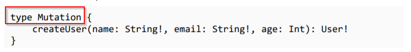

Very simply put this is nothing but CRUD in graphQL. You need to declare a new schema named as Mutation, just liek you did for query.
And in resolver functions a new resolver function for this is created as well.

Schema for mutation

The resolver function

Making request from GraphQL playground